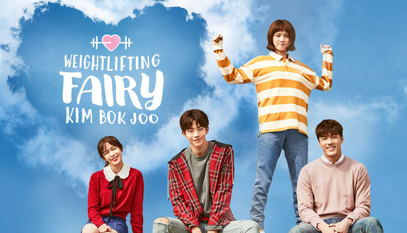
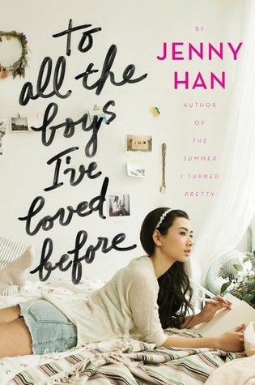
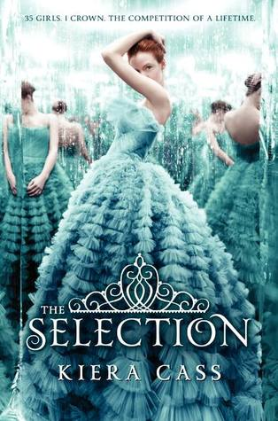
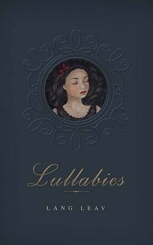
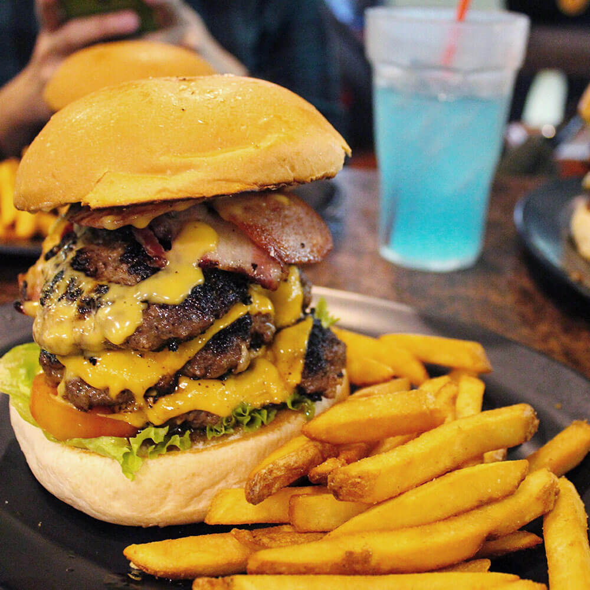
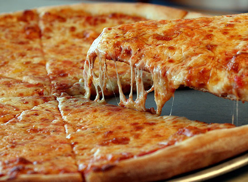
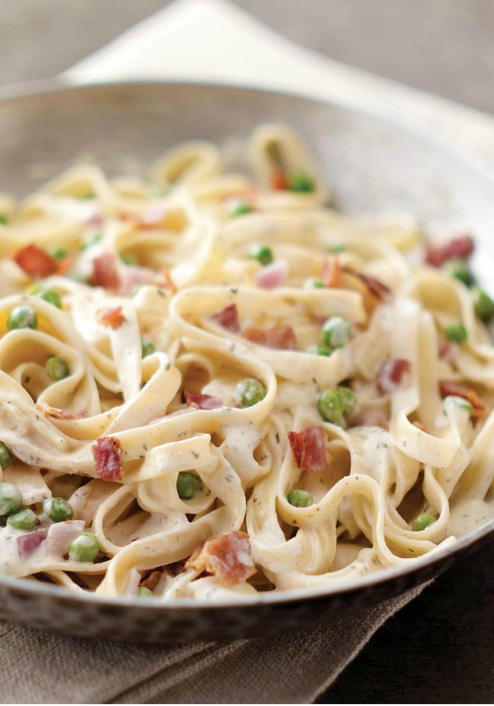
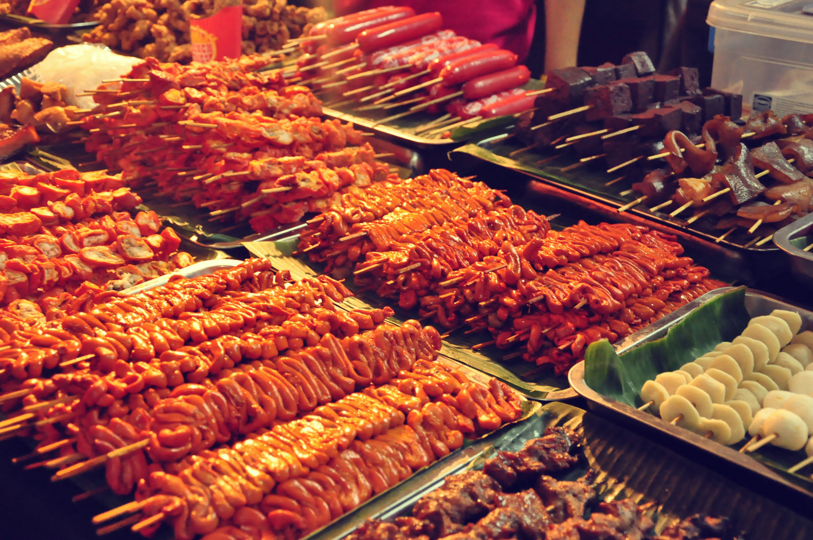
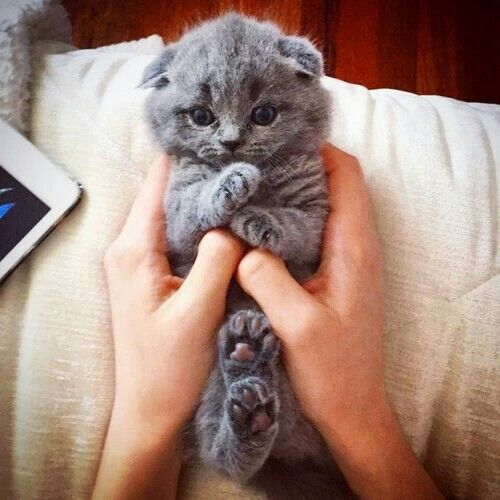
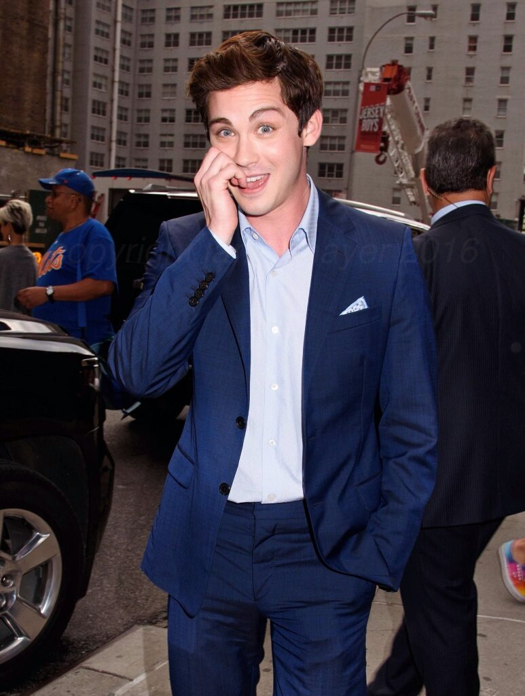

MOVIES and SERIES
Movies and tv series are totally awesome.
Whenever I watch, it drags me from reality to their own world.
It can be a world of magic, fantasy, horror or
romance or anything you prefer!
I really enjoy watching for it really amazes me how the writers come up with different plots and also I love escaping my
reality.
I am fond of watching American TV Series and Kdramas, too. Here are some of my favorites.
|  weightlifting fairy |
 Game of Thrones |
 The Walking Dead |
 Fast and Furious series |
Me Before You |
BOOKS
Just like movies, books are also an alternative way out of my reality. My beautiful escape. The difference only is that in
watching movies, you just watch. But when you read, you let your imagination take control of yourself. You are responsible for the kind of world you will create.
The book is just a guide, but you are the creator of the other world. I also like the part where I imagine that I am the protagonist of the story. It really excites
my soul to feel that I am another person, and not just the real me! Here are some books that I enjoyed reading.
I love this topic the most. It started when I read the Percy Jackson Series by Rick Riordan. The concept about the gods really fascinates
me and each of their stories. It is my pleasure to introduce them to you!




GREEK MYTHOLOGY


FOODS
I AM DEFINITELY A FOOD LOVER. In everything I will do, there should be always food. In my happiness, discomfort, grief, success
and whatever I may be feeling, I will always eat! Food comforts me and food serves as my reward whenever I have done something good or I have achieved
something. Everybody says how "matakaw" I am and I'm not shy to admit it, I REALLY LOVE EATING. And the bonus is, no matter how much I eat, I don't get fat. Believe it or not,
I'm still underweight. It just pushes me more to eat and eat because I don't get fat not like others that is conscious and maintains their weight. Me? I don't care about
anything I just want to eat! Here are some food that I surely enjoy eating and I know you will drool over these, too! Dogs are cute. BUT CATS ARE EVEN CUTER AND SWEETER! No offense for the dog lovers but it is only for me. When I was a kid, I lived with a cat
and it really was always sweet to me. My cat and I watch televion together, it lies on my tummy while I was lying on the bed. Until now, I always
follow profiles on social media that are about cats. I dream of having a cat with breed, any breed will do! But as of now, I can't afford any and my mom
don't let me pet a cat because of my brothers that are allergic to cats. Yes, that's really sad in my part but I swear when I have my own house,
it will be full of cute cats all around! Of course my boyfriends will always be included in my interest! Allow me to introduce my showbiz boyfriends to you and where I met them. :D





CATS
Look at these fluffy cats!!!!! I wish they are all mine!!!!





BOYFRIENDS
 Logan Lerman. My fangirling over him started when I watch the movie Percy Jackson. Firstly, I watched the movie because i am
done reading its book. Before I saw who is the actor that portrayed Percy Jackson, I am already in love with the character. But when I saw Logan Lerman (the actor
who portrayed the role Percy Jackson) I fell in love so much MORE.
Nam Joo Hyuk. I am already seeing him in some posts of my friends in facebook. At first, I really didn't get it why my friends
have crush on him but when I watched his drama series entitled Weightlifting Fairy Kim Bok Joo, I fell in love! He portrayed his role there so well, cool and hot at
the same time! I just find myself drooling over him whenever I see his photos in social media.
 Theo James. I first saw him on the movie, Divergent. Like Nam Joo Hyuk, I also fell in love with him
the moment I saw how he portrayed his character so good in the movie.
Theo James. I first saw him on the movie, Divergent. Like Nam Joo Hyuk, I also fell in love with him
the moment I saw how he portrayed his character so good in the movie. Song Joong Ki. The man who I have heart-eyes for! The moment I saw him when I watched his kdrama entitled Descendants
of the Sun, I knew he was the one (just kidding). He is really so handsome and he portrayed his role so cool in that kdrama!!!! Sadly,
he is going to marry someone else in the real life. I'm happy for him though!
Joshua Garcia. I have a crush on him since the days of PBB. I forget about him a little but now that he was again famous,
I appreciate his handsomeness again. How cute his smile is, look!